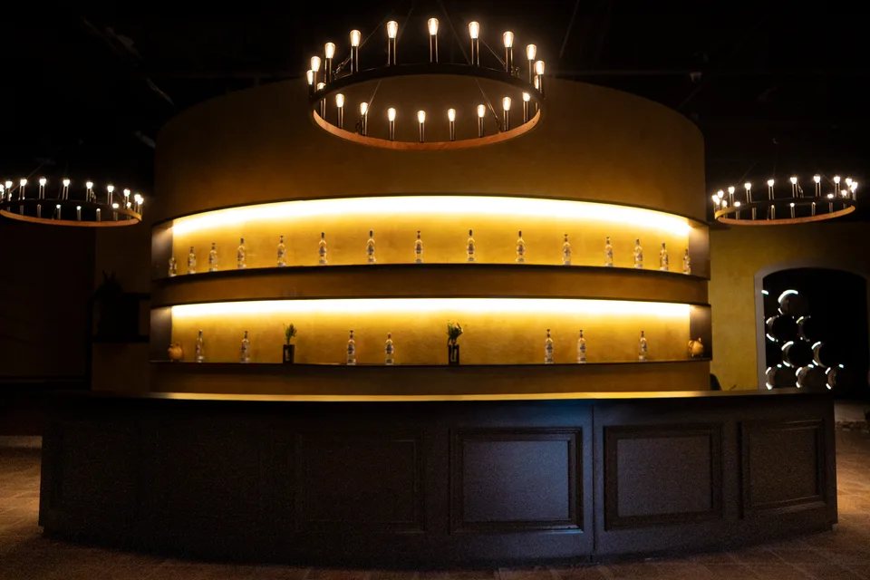
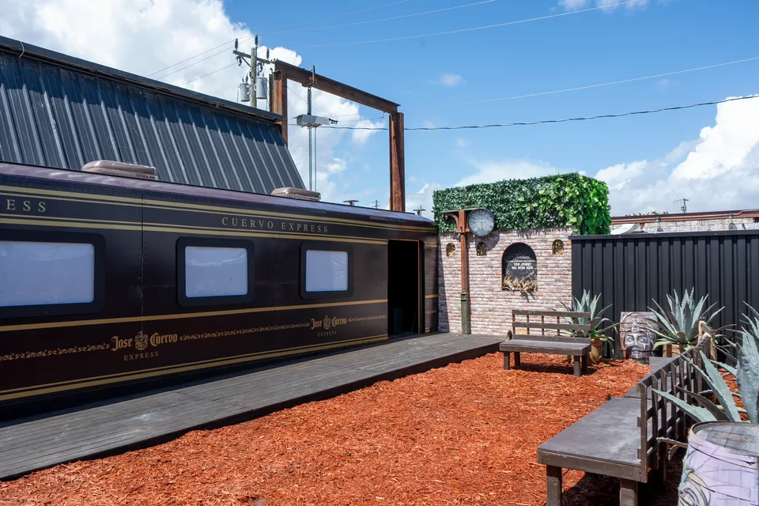
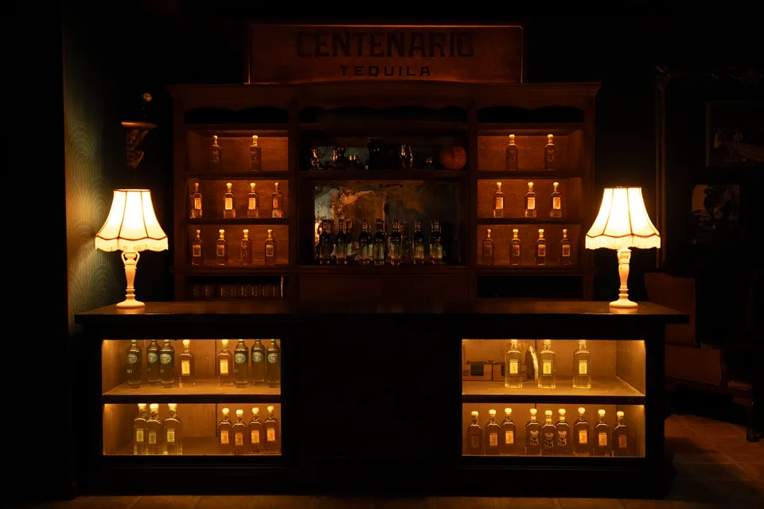
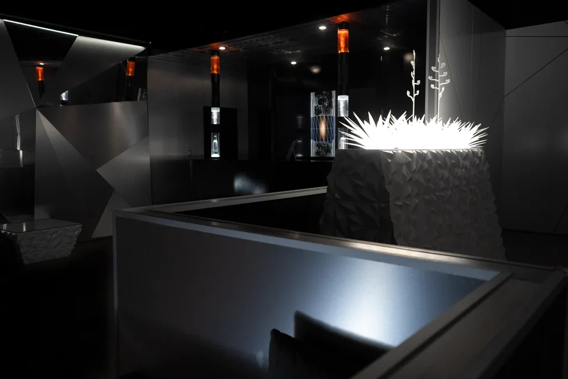

Tequila Town / Press & media
Put the town
in print.
The assets behind the story. Logos, brand type and photography for your next feature on Tequila Town.
ZIP · 2.4 MB · Logos, fonts, photos & fact sheet

Make your mark.
The Tequila Town wordmark, ready for light or dark backgrounds. Keep its proportions and give it room to breathe.


Type with character.
The two brand fonts used on the Tequila Town Miami and partnership sites.
A sense of place.
Four photographs of the venue as built. JPEGs, up to 2400 pixels on the longest side. Please credit: Courtesy of Tequila Town.
La Rojeña
Courtesy of Tequila Town


Espíritu Express
Courtesy of Tequila Town


The Hacienda
Courtesy of Tequila Town


Cristalino Cantina
Courtesy of Tequila Town

The story, in brief.
Download fact sheet ↓Tequila Town is an immersive agave experience in Miami, inspired by the culture and landscapes of Mexico. The venue brings together themed environments, tasting moments, food and music. Its spaces also host private celebrations, brand experiences, corporate events, and film and photo productions.
- Based in
- 4710 NW 37th Avenue
Miami, FL 33142 - Press & media
- hi@tequila.town
(786) 797-0200 - Materials & credits
- Download usage notes ↓
Cream
#F3E6C8
Paper
#E9DCBF
Gold
#FFCE64
Clay
#AE3D00
Forest
#0F251A
Ink
#24170E
Colors from the Tequila Town Miami website. Download palette ↓
Let’s tell the story.
For interviews, current details, photo credits or additional assets, get in touch.